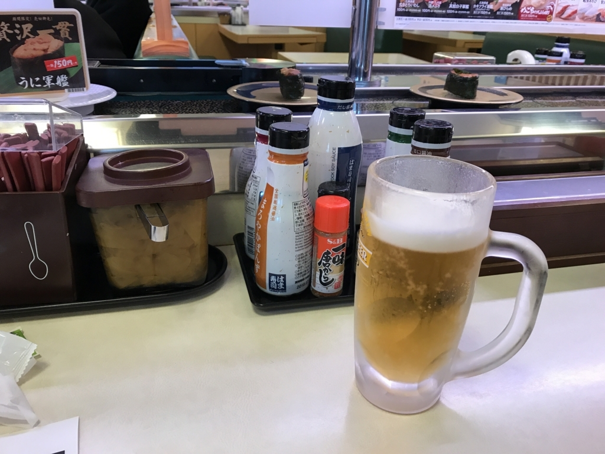
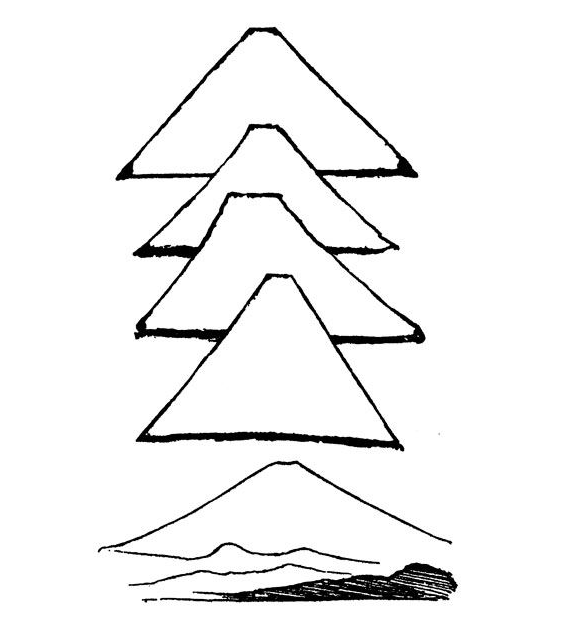

2018年1月20日の日記：修理に出した iPad を迎えに行って、回転ずし屋で独り飲みした
公開日：
不眠が続いていて断続的に目が覚める日が続いているけれど、昨晩はいい感じに眠れた。休日なので「起きなければならない」というプレッシャーがないせいだろう。
11時頃に布団からよろばいでて、本を読んだり、シャワーを浴びたりしているうちに時計の針は1時を回ってしまった。このままでは何もせずに1日が過ぎてしまう。せめてやらなければならないことだけでも済まそうと、パンツ＋シャツ＋褞袍という室内装備を脱ぎ捨てて、和服を着がえた。修理から帰ってきた iPad を街まで取りに行かなければならない。
今日は暖かいので、襟巻は薄めのものを。四半刻ごとにくる本町線を捕まえ、電車に揺られながら大街道へでた。人は多くもなく、かといって少なくもなく。これぐらいの陽気であれば、羽織だけでもよかったかもしれない。
キタムラで4,400円を支払い、ピカピカになった iPad Pro を受け取る。こっちが Apple 製品をそれなりに使い慣れていると察してくれたのだろうか、説明は勘所を得ていて、無駄がない。案外スムーズに受け取りが済んだのはうれしいことだ。気を利かせて SIM カードも刺してくれたし、50円玉を落としたのも拾ってくれた（← 落とすなよ！

帰りは千舟町のあたりをぶらぶら歩いて――銀天街は人が多そうだったし、店にはあまり興味がないので避けた――松山市駅から電車に乗った。3時をとっくに過ぎているが、起きてから何も食べてない。いい加減おなかも空いたし、どこかでなにか食べたいものだ。どうせ今日はこれ一食だろうし、どうせなら酒も飲みたい……というわけで、自宅の近所の回転ずし屋へ行く。寿司をつまみながら、『鉱物 人と文化をめぐる物語』の残りを全部読んだ。
")
- 作者: 堀秀道
- 出版社/メーカー: 筑摩書房
- 発売日: 2017/12/07
- メディア: 文庫
- この商品を含むブログを見る
この本はあちこちに書いた鉱物エッセイを一つにまとめたもののようだけど、鉱物にとどまらず、歴史や文化にも幅広く触れていて、視野の広がる一冊だった……っていうか、今までが視野狭すぎたんだな（
金や銀、鉄のはなしはこれまでにも読んできたので、それ以外の鉱物にも――と思い手を取ってみたのだけど、中央アジアのラピスラズリ、中国の璧玉、誕生日石などなど……興味深い話でいっぱいだった。まぁ、日本人の鉱物に対する意識が新石器時代レベルだとのとディスられるのには閉口したし、それほど深堀していない点については残念だったけど、入門用としては楽しめると思う。
それにしても、“金満国家”だった時代に開催された（今でもされているのかな）ミネラル・ショーの舞台裏なんかを聞くと――まじで落ちぶれるところまで落ちたもんだな、日本も、と感じざるを得ない。最近なぞ、鉱物に興味を持つどころか、結婚指輪さえそれなりのもので満足する人が多くなっているのではないか。
あと、モノそのものを観察せず、与えられた・受け継いだ観念に従順過ぎるのも日本人の――といえば、主語が大きすぎると怒られそうだが――悪弊だな。ちょうど並行してエドワード・モースの『日本その日その日』を読んでいるのだけど、興味をそそる話が記録されている。
モースは大森貝塚などで有名な、いわゆる明治の“お雇い外国人”だが、東京で教鞭をとった際の見聞を日記にまとめている。ある日、彼は生徒に「富士山の傾斜を記憶に基づいて書くように」と指示した。それが以下の図だが……

実際よりも稜線が急に描かれている。"これ等の青年はここ数週間、一日に何十遍となく富士を眺め、測量や製図を学び、角度、円の弧等を承知している上に、特に、斜面を誇張しないようにとの、注意を受けた"にも拘らず。
私は外山と松村に向って、何事にでも「何故、どうして」と聞く。そして時々驚くのは、彼等が多くの事柄に就いて、無智なことである。この事は他の人々に就いても気がついた。彼等が質問のあるものに対して、吃驚したような顔つきをすることにも、気がついた。そして彼等は質問なり、その事柄なりが、如何にも面白いように微笑を浮かべる。……学生や学問のある階級の人々は、漢文なり現代文学なりは研究するが、ある都会の死亡率や、死亡の原因などを知ることに、興味も重大さも感じないのであろう。
モース先生は日本人への採点がかなり甘いだけに、印象の残る評価だ。『鉱物』で指摘されていた"日本人は鉱物の鑑定レベルが低い"というのも、こういう気質と関係があるように感じる。実物を見て感じることをおろそかにして、教科書や文献、権威による評価、自らの思い込みに頼るところが多すぎるのではないか。
")
- 作者: エドワード.シルヴェスター・モース,石川欣一
- 出版社/メーカー: 講談社
- 発売日: 2013/06/11
- メディア: 文庫
- この商品を含むブログ (4件) を見る
まぁ、富士山はともかく、鉱物というのは機会を見つけて実物に触れていきたいかもと思った。鳥や花も、どうでもいい雑草も、それなりにちゃんと見るようにしたいかな。もうだいぶ感受性が鈍ってしまっているから、どこまでできるかは知らんが。
なお、アプリの開発は、どうやら興味が尽きたので、だいぶお休みすると思う。明日（すでに今日だけど）、リファクタリングの物まねをしながらコードをまとめ、次回やる気がわいたときにまた同じ失敗をしないように整理整頓しておくつもり。